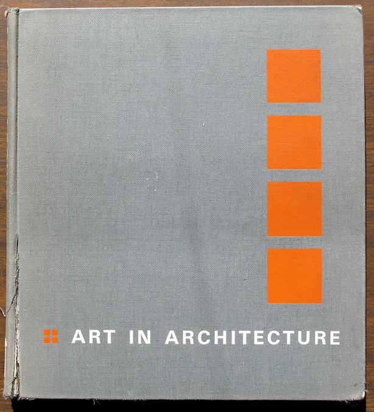

In 1968, Detroit architect, painter, and Rubello patron Louis Redstone publishes a book that advocates for, documents, and celebrates the intentional integration of artwork into and onto buildings. (Redstone's local buildings include the former Manufacturers National Bank building downtown, decorated with distinctive, sculptural cast concrete panels by artist Robert Youngman.)
From Art in Architecture's introduction:
This book is written with a fervent hope that all the arts will take their rightful place again in the total environment of our reborn cities. The geometric patterns of our buildings, so characteristic of our machine-age period, more than ever before demand the human touch of the sculptor, the painter, and the craftsman....There is a continuous war to be fought against urban ugliness....Essential to this objective, I believe, is the integration of art in all of its forms in the daily life of the community.16
Art in Architecture is a work motivated by the passions of its author, but it is also a revealing artifact from a time of renewed interest in public art, a moment that "coincided with a period of widespread urban renewal" in the US, according to art historians Harriet Senie and Sally Webster:
"In 1966 the Model Cities Act was passed, and a variety of local zoning ordinances offered bonuses to builders for the inclusion of open space....Public art became a part of urban renewal programs, as it had been in centuries past, functioning an emblem of culture and a manifestation of economic wealth...."19
See LIVING WITH ART , PUBLIC ART , NATIONAL ENDOWMENT FOR THE ARTS , and URBAN RENEWAL